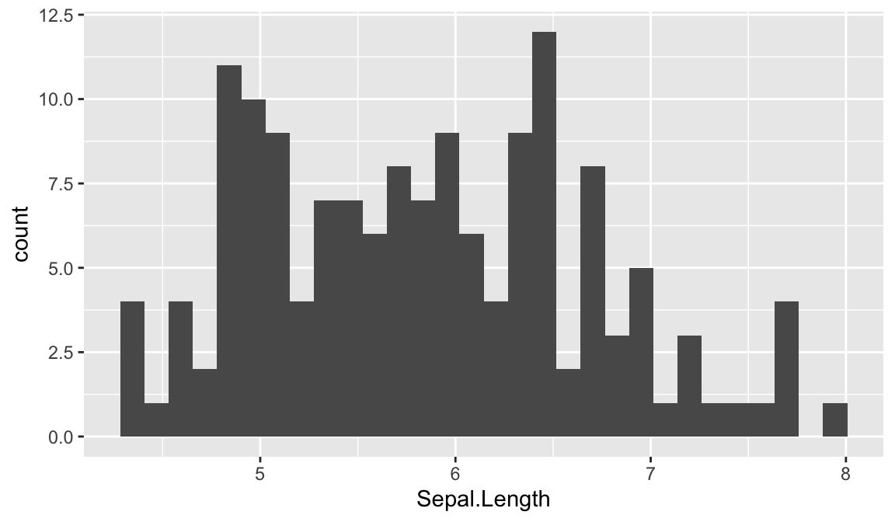

30 Lesson 6c: Writing functions
R is a functional programming language, meaning that everything you do is basically built on functions. However, moving beyond simply using pre-built functions to writing your own functions is when your capabilities really start to take off and your code development/writing takes on a new level of efficiency. Functions allow you to reduce code duplication by automating a generalized task to be applied recursively. Whenever you catch yourself repeating a function or copy and pasting code there is a good change that you should write a function to eliminate the redundancies.
Unfortunately, due to their abstractness, grasping the idea of writing functions (let alone writing them well) can take some time. However, in this lesson I provide you with the basic knowledge of how functions operate in R to get you started on the right path.
30.1 Learning objectives
By the end of this lesson you will be able to:
- Identify when you should re-write code into a function.
- Understand the general components of functions.
- Allow users of your functions to specify function arguments in different ways.
- Incorporate messages, warnings, and error handling into your functions.
- Use evaluation rules so arguments can be used only when necessary.
- Save & source your own functions for reuse.
30.2 When to write functions
This section is taken directly from R for Data Science by Garrett Grolemund and Hadley Wickham and is a great example of how to first start thinking about functions.
You should consider writing a function whenever you’ve copied and pasted a block of code more than twice (i.e. you now have three copies of the same code). For example, take a look at this code. What does it do?
df <- data.frame(
a = rnorm(10),
b = rnorm(10),
c = rnorm(10),
d = rnorm(10)
)
df$a <- (df$a - min(df$a, na.rm = TRUE)) /
(max(df$a, na.rm = TRUE) - min(df$a, na.rm = TRUE))
df$b <- (df$b - min(df$b, na.rm = TRUE)) /
(max(df$a, na.rm = TRUE) - min(df$b, na.rm = TRUE))
df$c <- (df$c - min(df$c, na.rm = TRUE)) /
(max(df$c, na.rm = TRUE) - min(df$c, na.rm = TRUE))
df$d <- (df$d - min(df$d, na.rm = TRUE)) /
(max(df$d, na.rm = TRUE) - min(df$d, na.rm = TRUE))You might be able to puzzle out that this rescales each column to have a range from 0 to 1. But did you spot the mistake? I made an error when copying-and-pasting the code for df$b: I forgot to change an a to a b. Extracting repeated code out into a function is a good idea because it prevents you from making this type of mistake.
To write a function you need to first analyze the code. How many inputs does it have?
(df$a - min(df$a, na.rm = TRUE)) /
(max(df$a, na.rm = TRUE) - min(df$a, na.rm = TRUE))This code only has one input: df$a. (It’s a little suprisingly that TRUE is not an input: you can explore why in the exercise below). To make the single input more clear, it’s a good idea to rewrite the code using temporary variables with a general name. Here this function only takes one vector of input, so I’ll call it x:
x <- 1:10
(x - min(x, na.rm = TRUE)) / (max(x, na.rm = TRUE) - min(x, na.rm = TRUE))
## [1] 0.00000 0.11111 0.22222 0.33333 0.44444 0.55556 0.66667 0.77778 0.88889 1.00000There is some duplication in this code. We’re computing the range of the data three times, but it makes sense to do it in one step:
rng <- range(x, na.rm = TRUE)
(x - rng[1]) / (rng[2] - rng[1])
## [1] 0.00000 0.11111 0.22222 0.33333 0.44444 0.55556 0.66667 0.77778 0.88889 1.00000Pulling out intermediate calculations into named variables is a good practice because it makes it more clear what the code is doing. Now that I’ve simplified the code, and checked that it still works, I can turn it into a function:
rescale01 <- function(x) {
rng <- range(x, na.rm = TRUE)
(x - rng[1]) / (rng[2] - rng[1])
}
rescale01(c(0, 5, 10))
## [1] 0.0 0.5 1.030.3 Function components
With the exception of primitive functions all R functions have three parts:
body(): the code inside the functionformals(): the list of arguments used to call the functionenvironment(): the mapping of the location(s) of the function’s variables
In most of the subsequent examples, we will be using the transaction table from the Complete Journey data.
transactions <- completejourney::transactions_sampleTo illustrate the function components we talked about, let’s build a function that finds the total sales for a store, for a given week. In the function that follows, the body of the function includes the summation equation that needs to be calculated, and then rounded to two decimals. The formals (or arguments) required for the function are the store_id, and the specific week for which we need the sales. And the environment shows that function operates in the global environment.
sales <- function(store, week) {
# aggregation function
store_sales <- aggregate(
transactions$sales_value,
by = list(
store_id = transactions$store_id,
week = transactions$week), FUN = "sum"
)
# get result for relevant store & week
valid_store <- store_sales$store_id == store
valid_week <- store_sales$week == week
result <- store_sales[valid_store & valid_week, 'x']
# round and return result
round(result, digits = 2)
}
body(sales)
## {
## store_sales <- aggregate(transactions$sales_value, by = list(store_id = transactions$store_id,
## week = transactions$week), FUN = "sum")
## valid_store <- store_sales$store_id == store
## valid_week <- store_sales$week == week
## result <- store_sales[valid_store & valid_week, "x"]
## round(result, digits = 2)
## }
formals(sales)
## $store
##
##
## $week
environment(sales)
## <environment: R_GlobalEnv>30.4 Function arguments
To perform the sales() function we can call the arguments in different ways.
# using argument names
sales(store = 309, week = 31)
## [1] 29.76
# same as above but without using names (aka "positional matching")
sales(309, 31)
## [1] 29.76
# if using names you can change the order
sales(week = 31, store = 309)
## [1] 29.76
# if not using names you must insert arguments in proper order
# in this e.g. the function assumes store_id = 317, and week = 27
sales(317, 27)
## [1] 17.1Note that when building a function you can also set default values for arguments. In our original sales(), we did not provide any default values, so if we do not supply all the argument parameters an error will be returned. However, if we set default values then the function will use the stated default if any parameters are missing:
# missing the week argument
sales(309)
## Error in sales(309): argument "week" is missing, with no default
# creating default argument values
sales <- function(store, week = 52) {
# aggregation function
store_sales <- aggregate(
transactions$sales_value,
by = list(
store_id = transactions$store_id,
week = transactions$week), FUN = "sum"
)
# get result for relevant store & week
valid_store <- store_sales$store_id == store
valid_week <- store_sales$week == week
result <- store_sales[valid_store & valid_week, 'x']
# round and return result
round(result, digits = 2)
}
# function will use default values
sales(309)
## [1] 6.49
# specifying a different week value
sales(309, 48)
## [1] 25.1430.5 Checking arguments and other conditions
We’ve created a function that allows users to specify their inputs. But how do we ensure they provide us with the right kind of inputs? Or what if we want to be able to provide some sort of feedback to the user?
There are several ways to signal conditions to function users:
stop()&stopifnot(): signal an error (no way for a function to continue and execution must stop)warning(): signal a warning (something has gone wrong but the function has been able to at least partially recover.)message(): signal an informative message (function works fine but user should be informed of something.)
The stop functions are most commonly used to check for proper inputs but can be used to stop the function procedures because the user’s environment is not properly established. When applying stop we should always weigh the benefits of highly custom, informative error messages (via stop) versus short to the point (via stopifnot)
When using the stop functions execution will stop at the first violation.
sales <- function(store, week = 52) {
# validate arguments
if (!is.numeric(store) | !is.numeric(week)) {
stop("`store` and `week` arguments must be numeric values", call. = FALSE)
}
# aggregation function
store_sales <- aggregate(
transactions$sales_value,
by = list(
store_id = transactions$store_id,
week = transactions$week
), FUN = "sum"
)
# get result for relevant store & week
valid_store <- store_sales$store_id == store
valid_week <- store_sales$week == week
result <- store_sales[valid_store & valid_week, 'x']
# round result
round(result, digits = 2)
}# valid inputs
sales(309, 48)
## Error in match.fun(FUN): argument "FUN" is missing, with no default
# invalid inputs
sales(309, "48")
## Error: `store` and `week` arguments must be numeric valueswarnings() are rarely used but can be useful to signal non-terminating concerns such as:
- hyperparameter clashes in a grid search
- an extremely long compute time and the user may want to re-assess
- deprecated functions
- NAs, NULLs, Infs exist, which result in NA output
For example, many of the lubridate functions throw a warning message if one of the dates in a vector are not in a standard date format that includes day, month and year:
lubridate::mdy(c("2-1-2019", "1995"))
## Warning: 1 failed to parse.
## [1] "2019-02-01" NAFor example, say that we knew there was an issue with our data collection process for the last week of the year and incomplete sales data was reported. If we want to ensure users of our function are aware of this concern we could add a warning message.
sales <- function(store, week = 52) {
# add warning message
if (week == 52) {
warning("Due to EOY reporting issues week 52 has incomplete sales data",
call. = FALSE)
}
# check inputs
if (!is.numeric(store) | !is.numeric(week)) {
stop("`store` and `week` arguments must be numeric values", call. = FALSE)
}
# aggregation function
store_sales <- aggregate(
transactions$sales_value,
by = list(
store_id = transactions$store_id,
week = transactions$week
), FUN = "sum"
)
# get result for relevant store & week
valid_store <- store_sales$store_id == store
valid_week <- store_sales$week == week
result <- store_sales[valid_store & valid_week, 'x']
# round result
round(result, digits = 2)
}
sales(309, 52)
## Warning: Due to EOY reporting issues week 52 has incomplete sales data
## [1] 6.49message() is designed to be informational and we use them to tell the user that you’ve done something on their behalf. Examples include:
Setting default arguments that may be non-trivial
library(ggplot2) ggplot(iris, aes(Sepal.Length)) + geom_histogram() ## `stat_bin()` using `bins = 30`. Pick better value with `binwidth`.
how information was interpreted by the function
df <- readr::read_csv(here::here("data", "monthly_data", "Month-01.csv")) ## Rows: 54535 Columns: 10 ## ── Column specification ───────────────────────────────────────────────────────────────────────────────────────────────── ## Delimiter: "," ## chr (4): Factor_C, Factor_E, Transaction_Status, Month ## dbl (5): Account_ID, Factor_A, Factor_B, Factor_D, Response ## dttm (1): Transaction_Timestamp ## ## ℹ Use `spec()` to retrieve the full column specification for this data. ## ℹ Specify the column types or set `show_col_types = FALSE` to quiet this message.
Or any other reasons. In our case, we may want to signal to the user how many observations are being included in our aggregation.
When providing messages like the below, its always good practice to provide an option to suppress messages.
sales <- function(store, week = 52, verbose = TRUE) {
# add warning message
if (week == 52) {
warning("Due to EOY reporting issues week 52 has incomplete sales data",
call. = FALSE)
}
# check inputs
if (!is.numeric(store) | !is.numeric(week)) {
stop("`store` and `week` arguments must be numeric values", call. = FALSE)
}
# aggregation function
store_sales <- aggregate(
transactions$sales_value,
by = list(
store_id = transactions$store_id,
week = transactions$week), FUN = "sum"
)
# get n observations
valid_store = transactions$store_id == store
valid_week = transactions$week == week
n_obs = nrow(transactions[valid_store & valid_week, ])
# provide message
if (verbose) {
message("Store ", store, " had ", n_obs, " transactions during week ", week)
}
# round output
round(store_sales$x[which(store_sales$store_id == store & store_sales$week == week)], 2)
}
sales(309, 50)
## Store 309 had 4 transactions during week 50
## [1] 10.3430.5.1 Knowledge check
Take a look at the following function that we introduced at the beginning of this lesson:
rescale <- function(x, digits = 2){
rng <- range(x, na.rm = TRUE)
scaled <- (x - rng[1]) / (rng[2] - rng[1])
round(scaled, digits = digits)
}
# test vector
set.seed(123)
test_vector <- c(runif(20, min = 25, max = 40), NA)
rescale(test_vector)
## [1] 0.27 0.82 0.40 0.92 0.98 0.00 0.53 0.93 0.56 0.45 1.00 0.45 0.69 0.58 0.07 0.94 0.22 0.00 0.31 1.00 NA-
Move the
na.rm = TRUEoption to the function arguments so that the user can control whether or not to remove missing values. -
Add a
stopthat throws an error if the user supplies non-numeric values forx. -
Add a
warning()that tells the userNAs are present (if they usena.rm = FALSE) -
Add a
message()that tells the user how manyNAs were removed
Your results should look something like this:
# results in an error
rescale(letters)
## Error: `x` must be a numeric atomic vector
# results in warning
rescale(test_vector, na.rm = FALSE)
## Warning: There are 1 NAs. Remove them with `na.rm = TRUE`
## [1] NA NA NA NA NA NA NA NA NA NA NA NA NA NA NA NA NA NA NA NA NA
# results in message
rescale(test_vector)
## 1 NAs were removed.
## [1] 0.27 0.82 0.40 0.92 0.98 0.00 0.53 0.93 0.56 0.45 1.00 0.45 0.69 0.58 0.07 0.94 0.22 0.00 0.31 1.0030.6 Lazy evaluation
R functions perform “lazy” evaluation, in which arguments are only evaluated if required in the body of the function.
Take the following function as an example, x is not used in the body of the function so even passing stop to x does not result in an error because x is never evaluated.
h01 <- function(x) {
10
}
h01(x = stop("This is an error!"))
## [1] 10This provides you with lots of flexibility in when and how to evaluate inputs
h02 <- function(x, y, z) {
if(missing(z)) {
sum(x, y)
} else {
sum(x, y, z)
}
}
# z does not exist
h02(x = 1, y = 2)
## [1] 3
# z does exist
h02(x = 1, y = 2, z = 3)
## [1] 6This may not seem useful but one of the more common applications is to use NULL to indicate that a variable is not required but can be used if supplied. For example, in the following function we add a multiplier argument. When multiplier is NULL we do not do anything with it but when its not NULL we multiply our output (pv) by the supplied value.
compute_pv <- function(fv, r, n, multiplier = NULL) {
# compute present value
pv <- round(fv / (1 + r)^n)
# apply multiplier if its supplied
if (is.null(multiplier)) {
pv
} else {
pv * multiplier
}
}
# w/o multiplier
compute_pv(1000, .05, 10)
## [1] 614
# with multiplier
compute_pv(1000, .05, 10, multiplier = 1.25)
## [1] 767.530.7 Status updates
When functions include an iterative nature (i.e. looping), a nice feature to include in your functions, both for yourself and other analysts, is a status output to inform the user how much computation has been done (i.e. how many loops have been performed) and how much is left.
30.7.1 Option 1: Base R
In base R we can create a simplistic status output by using txtProgressBar and setTxtProgressBar. There is some customization options with these such as width of progress bar, line type, etc. Also, note that it is good practice to add an argument that lets the user run the function in silent mode (provides more flexibility).
f1 <- function(x, n, verbose = TRUE) {
status <- NULL
iterate <- 1:n
# create progress bar
if(verbose) pb <- txtProgressBar(min = 0, max = length(n), style = 3)
# some iteration in your loop
for(i in seq_along(iterate)) {
# some functionality
Sys.sleep(x)
# update progress bar
if(verbose) setTxtProgressBar(pb, i/n)
}
}
f1(x = .2, n = 10)
##
|
| | 0%
|
|========= | 10%
|
|================= | 20%
|
|========================== | 30%
|
|================================== | 40%
|
|=========================================== | 50%
|
|==================================================== | 60%
|
|============================================================ | 70%
|
|===================================================================== | 80%
|
|============================================================================= | 90%
|
|======================================================================================| 100%30.7.2 Option 2: progress package
An alternative approach is the progress package. progress allows you to provide estimated time until completion, elapsed time in seconds, a spinner, etc. progress is also useful when your function is downloading many files as it will show download rate (bytes per second) and total bytes downloaded. Check out ?progress_bar for more details.
f2 <- function(x, n, verbose = TRUE) {
iterate <- 1:n
# create progress bar
pb <- progress::progress_bar$new(
format = " computing [:bar] :percent eta: :eta",
total = n, width = 60, force = TRUE
)
for (i in seq_along(iterate)) {
# some functionality
Sys.sleep(x)
# report progress
if(verbose) pb$tick()
}
}
f2(.3, 20)
## computing [==>-----------------------------] 10% eta: 3s computing
## [====>---------------------------] 15% eta: 3s computing [=====>--------------------------]
## 20% eta: 4s computing [=======>------------------------] 25% eta: 4s computing
## [=========>----------------------] 30% eta: 4s computing [==========>---------------------]
## 35% eta: 3s computing [============>-------------------] 40% eta: 3s computing
## [=============>------------------] 45% eta: 3s computing [===============>----------------]
## 50% eta: 3s computing [=================>--------------] 55% eta: 2s computing
## [==================>-------------] 60% eta: 2s computing [====================>-----------]
## 65% eta: 2s computing [=====================>----------] 70% eta: 2s computing
## [=======================>--------] 75% eta: 1s computing [=========================>------]
## 80% eta: 1s computing [==========================>-----] 85% eta: 1s computing
## [============================>---] 90% eta: 1s computing [=============================>--] 95%
## eta: 0s computing [================================] 100% eta: 0s30.8 Distributing your functions
If you want to save a function to be used at other times and within other scripts there are two main ways to do this. One way is to build a package which is discussed in more details here. Another option, and the one discussed here, is to save the function in a script. For example, we can save a script that contains a PV() function that computes the present value.
Figure 30.1: PV.R script that contains a function to compute the present value.
Now, if we are working in a fresh script you’ll see that we have no objects and functions in our working environment:
Figure 30.2: Fresh session.
If we want to use the PV function in th PV.R script we can simply read in the function by sourcing the script using source("PV.R"). Now, you’ll notice that we have the PV() function in our global environment and can use it as normal. Note that if you are working in a different directory then where the PV.R file is located you’ll need to include the proper command to access the relevant directory.
Figure 30.3: Sourcing the PV.R script.
30.9 Exercises
Practice writing the following functions and test them on the given test vector. There is source code in the following code chunk that you can re-write into the following functions:
-
variance() -
std_dev() -
std_error() -
skewness()
Be sure to add a parameter that handles missing values and add appropriate warnings and messages.
# create a function that computes the variance of x
(1 / (length(x) - 1)) * sum((x - mean(x))^2)
# create a function that computes the standard deviation of x
sqrt((1 / (length(x) - 1)) * sum((x - mean(x))^2))
# create a function that computes the standard error of x
var_x <- (1 / (length(x) - 1)) * sum((x - mean(x))^2)
sqrt(var_x / length(x))
# create a function that computes the skewness of x
n <- length(x)
v <- var(x)
m <- mean(x)
third.moment <- (1 / (n - 2)) * sum((x - m)^3)
third.moment / (var(x)^(3 / 2))Using the following test vector you should get these results:
# test vector
set.seed(123)
x <- rlnorm(100)
# variance function output
variance(x)
## [1] 3
# stardard dev output
std_dev(x)
## [1] 1.7
# standard error output
std_error(x)
## [1] 0.17
# skewness output
skewness(x)
## [1] 2.3Now store these functions in a separate script and source them in a fresh R session.
30.10 Additional resources
Functions are a fundamental building block of R and writing functions is a core activity of an R programmer. It represents the key step of the transition from a mere “user” to a developer who creates new functionality for R. As a result, its important to turn your existing, informal knowledge of functions into a rigorous understanding of what functions are and how they work. A few additional resources that can help you get to the next step of understanding functions include: